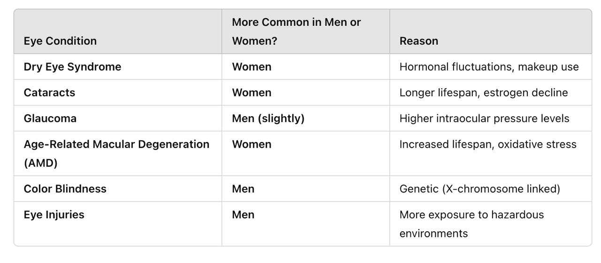

How Well Do You Really See?
The eye is one of the most vital organs in the human body, allowing us to perceive the world, interpret colors, recognize faces, and navigate our surroundings. Good vision is essential for daily activities such as reading, driving, and working, making eye health a crucial aspect of overall well-being. However, many people tend to overlook eye care until they experience noticeable problems. Lack of awareness about common eye defects like myopia, hypermetropia, astigmatism, and other vision impairments can lead to late diagnosis and worsening conditions. Regular eye check-ups, proper nutrition, protective eyewear, and reducing screen time are key preventive measures to maintain healthy vision. Early detection of eye defects, especially in children and young adults, can help in timely correction and prevent complications.
As part of our Data Analytics and Visualization course, I conducted a survey to analyze different types of eye defects, their prevalence among genders, and the age at which they were diagnosed. The study helped in understanding patterns in eye health, which can be useful for early diagnosis and preventive measures.
Eye Defects Survey Insights
Exploring the trends and patterns of eye defects based on survey data.
Gender Distribution
Understanding how eye defects vary across genders.
The gender distribution analysis provides insights into how eye defects vary across different genders. From the survey data, it is evident that males represent a slightly higher proportion of respondents diagnosed with eye defects compared to females.This variation could be influenced by genetic predisposition, environmental factors, or differences in healthcare access and awareness. Understanding these trends can help healthcare professionals and researchers develop targeted awareness campaigns and interventions to ensure early diagnosis and effective treatment strategies for all individuals, regardless of gender.
Types of Eye Defects
Analyzing the most common eye defects reported.
- Myopia is the most common eye defect, reported by 51 out of 62 respondents (82%).
- Other eye defects were reported by 6 respondents(which may include watery eyes,redness or no defect)
- Hypermetropia was seen in 4 cases, while Astigmatism was the least common with only 1 case.
- This indicates a strong prevalence of Myopia among the surveyed individuals.
Age of Diagnosis
At what age are most people diagnosed with eye defects?
- Most diagnoses happened between 11-15 years (29 cases, ~47%)
- 16-20 years was the second most common age group for diagnosis (22 cases, ~35%).
- Younger diagnoses (5-10 years) were reported by 8 individuals, while only 3 cases were diagnosed at 21-25 years.
- This suggests that most eye defects are detected during adolescence, especially between 11-15 years.
From the above visualization, it can be concluded that age plays a crucial role in the development and progression of eye defects. The prevalence and type of eye defects vary across different age groups due to genetic, environmental, and lifestyle factors.
-
Childhood (0-10 years)
Common Eye Defects: Progressive Myopia, Hypermetropia (farsightedness), Astigmatism
Causes:
- Genetic factors (if parents have vision problems)
- Excessive screen time and reduced outdoor activities
- Uncorrected refractive errors leading to long-term issues
Impact: Early diagnosis is critical as undetected issues can affect learning and development.
-
Adolescence (11-20 years)
Common Eye Defects: Progressive Myopia, Hypermetropia (farsightedness), Astigmatism
Causes:
- Increased screen exposure (phones, computers, gaming)
- Prolonged reading and studying with poor lighting
- Hormonal changes affecting vision stability
Impact: Myopia progression is rapid in this stage, and corrective measures are often needed.
-
Young Adults (21-30 years)
Common Eye Defects: Digital Eye Strain, Dry Eyes, Contact Lens-Induced Irritations
Causes:
- Long hours on digital screens (work, social media)
- Decreased blinking and poor eye hydration
- Poor diet lacking essential eye nutrients
Impact: Frequent headaches, blurred vision, and eye fatigue are common. Preventive measures help reduce strain.
-
Middle Age and Above
Common Eye Defects: Presbyopia, Cataracts, Increased Astigmatism
Causes:
- Age-related loss of lens flexibility
- Uncontrolled diabetes or hypertension
- Natural aging of eye structure
Impact: Reading glasses or bifocals are often needed; regular check-ups help detect cataracts early.
Other than Age, Gender also affects the vision of a person. Studies suggest that myopia (nearsightedness) is slightly more common in females than in males,because Women have shorter axial lengths (eye shape), which may contribute to a higher risk of refractive errors.
Hypermetropia (farsightedness) occurs equally in both genders.Women experience more dry eyes and vision fluctuations due to hormonal changes.

The survey on eye defects provided valuable insights into the prevalence of different vision impairments across various age groups and genders. The findings highlight that myopia (nearsightedness) is the most common eye defect, affecting a significant portion of respondents. The analysis also revealed that age plays a crucial role in the onset of vision problems, with most diagnoses occurring during adolescence and early adulthood. Additionally, gender differences were observed, with females being more prone to dry eye syndrome and cataracts, while males had a slightly higher risk of myopia and eye injuries.
These results emphasize the importance of regular eye check-ups, early diagnosis, and preventive measures such as proper screen time management, UV protection, and a balanced diet to maintain healthy vision. Raising awareness about eye health can help individuals take proactive steps to prevent long-term complications.
-Teesha Ramchandani